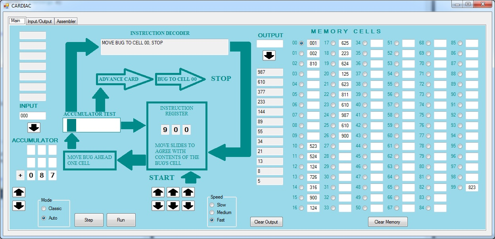
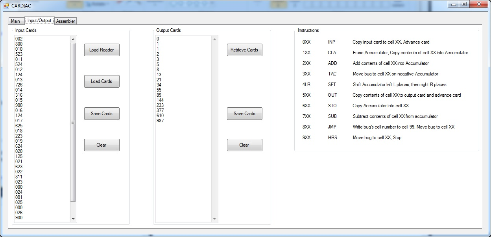
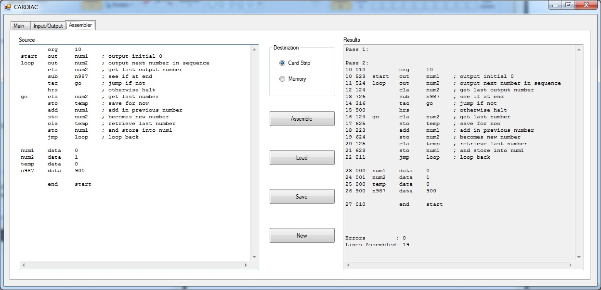

CARDIAC was developed by Bell Telephone Laboratories in 1968 as an inexpensive means to introduce the concepts of how computers work to high school students. It was essentially a cardboard "computer". Although it is not technically a computer it does a very good job of explaining how a computer actually works as well as facilitate learning to program without the need for expensive hardware. The CARDIAC provided instructions to the user on how to perform the various actions of a computer and it was up to the user to actually move numbers around, by writing them in pencil in various sqaures, as well as to perform any actual calculation.
Download the CARDIAC simulator
Note: This program requires .net 4.0 framework to be installed
CARDIAC Lots of information on the CARDIAC


